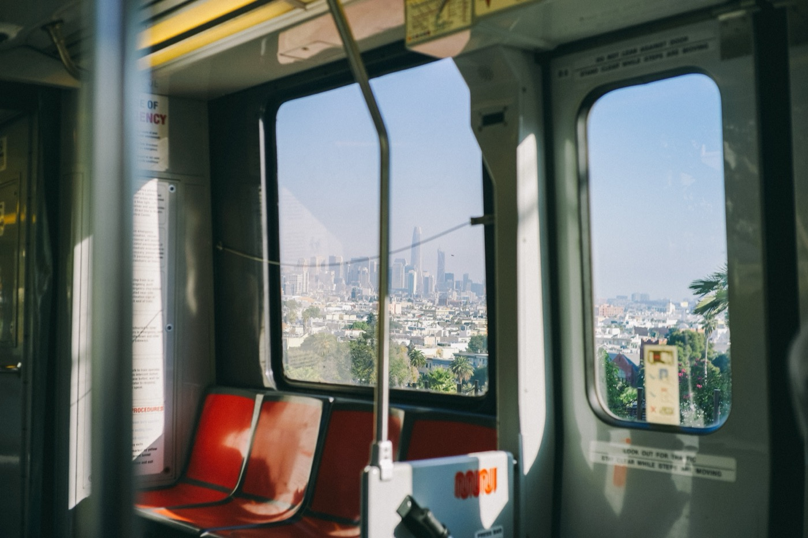
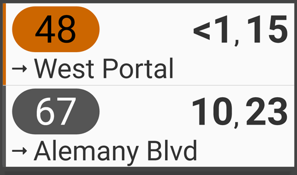
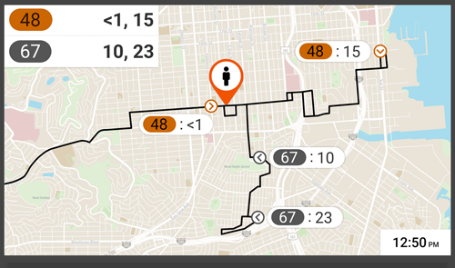
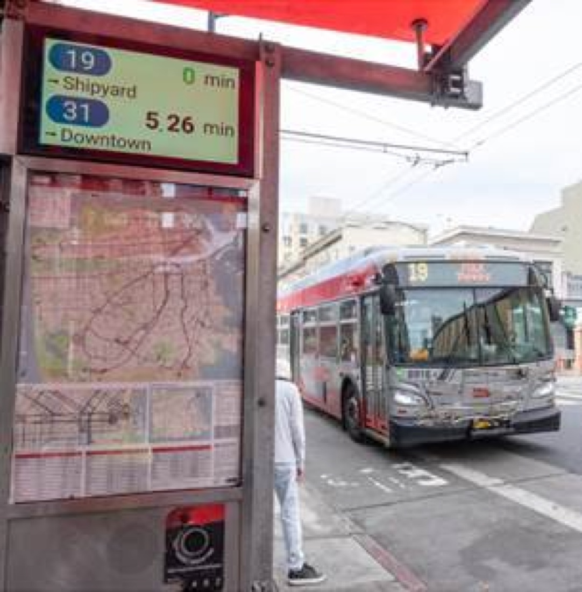
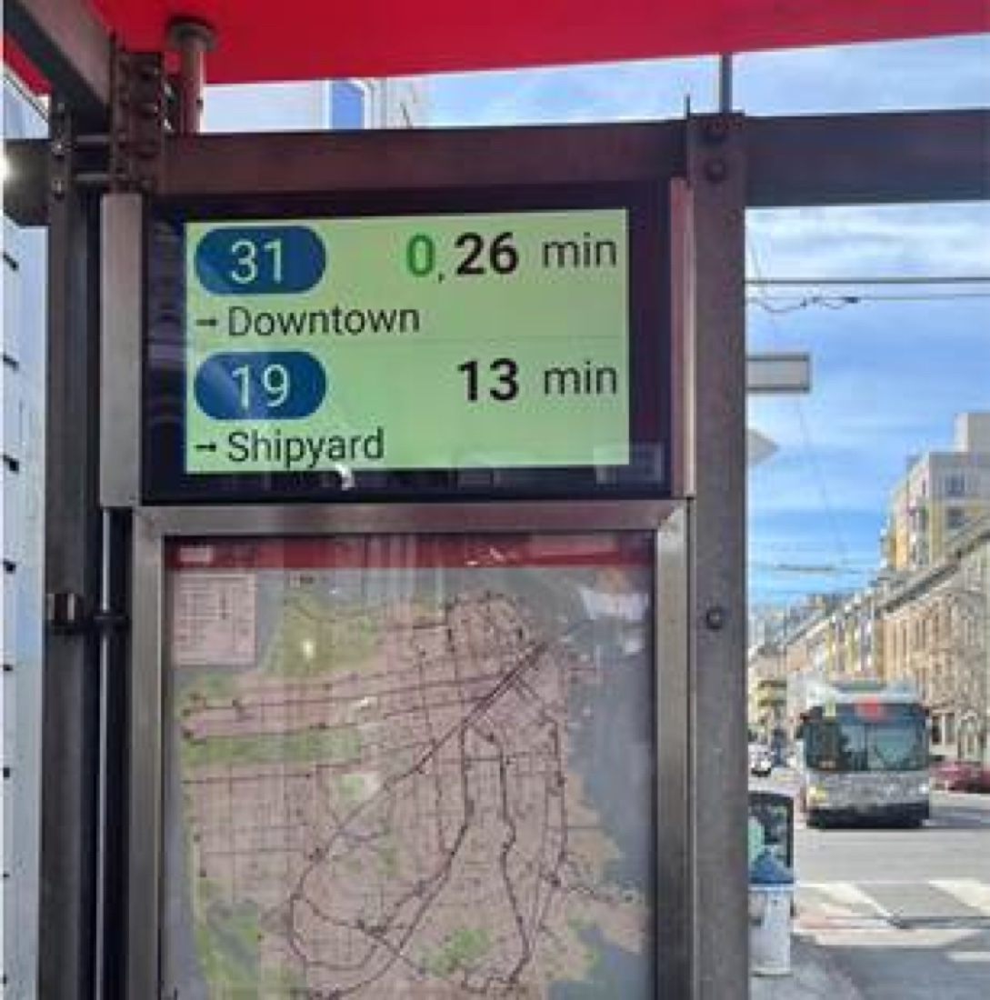
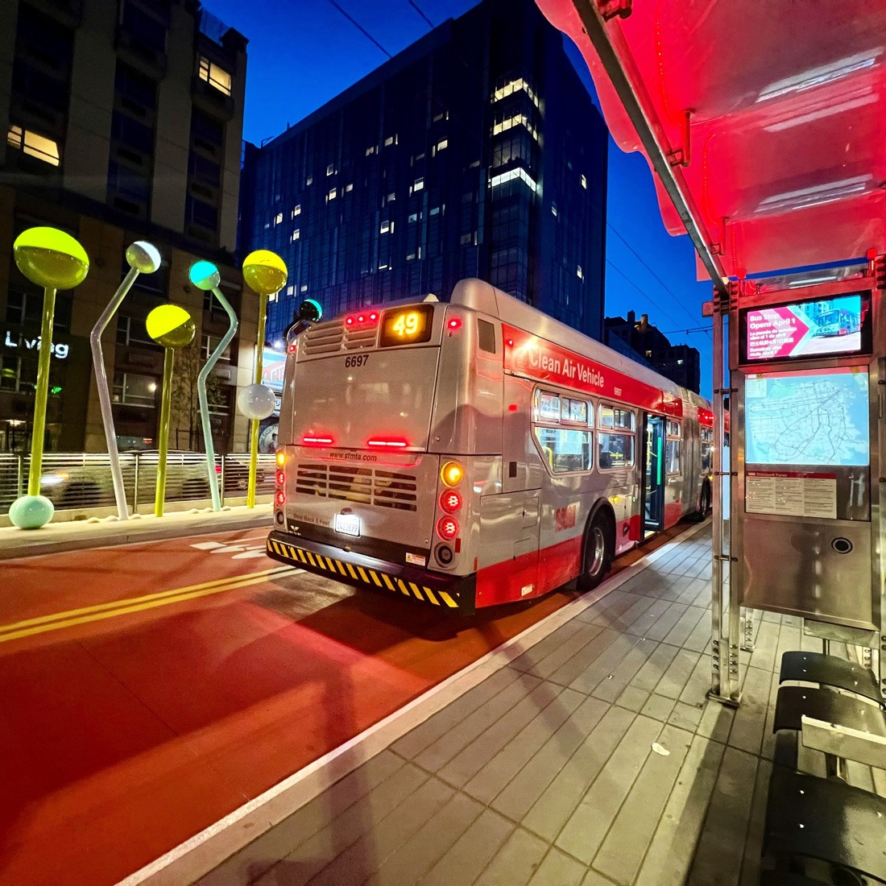
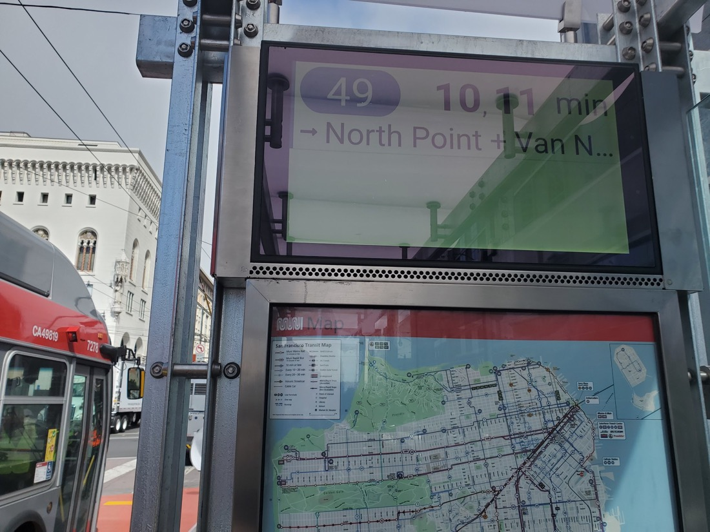

- Role
- UI/UX Designer
- Client
- Digital signage hardware company, San Francisco
- Timeline
- Three months in design, live since 2022
- Delivery
- Fully remote
Overview
The client was an American company specializing in hardware for digital signage, based in San Francisco, California. Their goal was to create a UI to be displayed at bus stops throughout the city. The deadline for the UI was three months, and the entire project was conducted remotely.

Briefing
At this stage, data was gathered to inform a more precise design for the UI. Several questions were posed to the client before a single screen was sketched.
- Which information do we need to display?
- What are the government's requirements?
- Does it need to be ADA compliant?
- Where will it run, and on which hardware?
ADA compliance
- 01
Font size & scale
Type had to stay legible at street distance, sized to the Americans with Disabilities Act's accessible design standards.
- 02
Contrast ratios
Every pairing of text and background was checked against ADA contrast requirements before it shipped.
- 03
A palette for colorblind riders
Route colors and status states were chosen to stay distinguishable for riders with color vision deficiency.
Process
- 01
Understanding the constraints
Gathered the government, hardware, and accessibility requirements the interface would have to satisfy before any screen was drawn.
- 02
Working the layout by hand
Explored arrangements for routes, arrival times, and maps at low fidelity, before committing to any single direction.
- 03
Building the real UI
Turned the strongest sketches into detailed, polished screens, applying type, contrast, and color that met every ADA requirement.
- 04
Client and government approval
Reviewed the mockups with both the client and the local government to confirm the design met every accessibility standard.
- 05
From mockup to build
Handed off specs and assets, working closely through implementation to keep the shipped screens faithful to the design.
- 06
Approved and deployed
A final round of approval from the client and the city cleared the interface for rollout across the network.
The interface


Impact
800+ screens deployed, approved by the client and the City of SF, operational since 2022.




Conclusion
The UI was approved by both the client and the local government. Implementation began in 2022, and the project is now operational, featuring more than 800 screens across various locations, including several bus stops.
Have a product worth skyrocketing?
I'm open to new opportunities and looking to join a team where I can bring a decade of product design and make a meaningful impact. If you're hiring, I'd love to hear about what you're building.